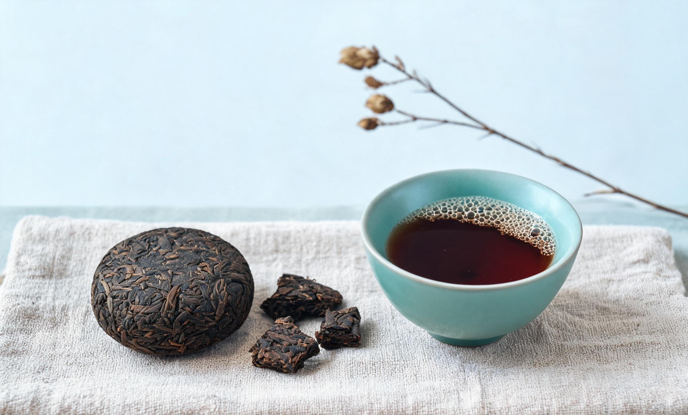

今日一盏
寒露已过，宜陈香老茶，水温 95℃
今日茶单
共 12 款西湖龙井绿茶 · 85℃
武夷岩茶乌龙 · 100℃

云南普洱黑茶 · 95℃
小记：下导航使用固定定位，始终贴在屏幕底部，五栏等分宽度，随视口宽度自适应。
茶事日程
本周 4 场-
2510月 · 周六可报名
秋日茶会 · 三家茶对饮
文澜茶室 14:00 — 16:00
-
2710月 · 周一已约满
龙井品鉴 · 明前与雨前
文澜茶室 14:00 — 15:30
-
3010月 · 周五可报名
线上茶课 · 乌龙七道冲泡
线上直播 21:00 — 22:00
-
0211月 · 周日筹备中
茶器展 · 紫砂与青瓷
一层展厅 全天